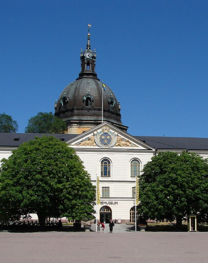

Du gamla, du fria, du framtida Sverige
Säkerhetspolitiken syftar till att bevara vår frihet och oberoende. Att kunna utveckla vårt samhälle som vi själva väljer. Över åren har den påverkats av föränderliga faktorer och händelser – ofta av hotet av ett krig. I hjärtat av vår säkerhetspolitik finns diplomati, handel, teknik och försvarssamarbeten.
-
Gå till tidslinje
Igår
Sveriges historia är brokig. Krig. Livsöden. Stormakt. Svält. Oberoende. Vilka vägval och händelser har bidragit till 500 år av självständighet?
-
Gå till media
Idag
Idag är hoten globala. Hur arbetar Sverige tillsammans med andra länder för att garantera fred och skapa en gemensam säkerhet?
-
Gå till blogg
Imorgon
Hotas Sveriges frihet och oberoende även om inte kriget hotar? Vad kan framtiden innebära för hot, risker och möjligheter?
Hörnstenar
Sveriges oberoende och handlingsfrihet handlar om att kunna upprätthålla vår politiska självständighet. Fyra hörnstenar är för oss särskilt intressanta: diplomati, handel, teknik och försvarssamarbeten.
Diplomati
Sverige är idag en stark röst för fred, demokrati, mänskliga rättigheter och rättsstatens principer och diplomatin kallas ofta vår främsta försvarslinje. Hur kan diplomati skapa trygghet?
Handel
EU är idag Sveriges viktigaste utrikes- och säkerhetspolitiska arena – och hemmamarknad. Handels- och samarbetsavtalet har alltid utgjort grunden för ett viktigt partnerskap. Vilken roll har handeln?
Säkerhet
Utöver våra samlade resurser för att möta hot och utmaningar mot vår säkerhet är internationella försvarssamarbeten ett verktyg för att bidra till långsiktig stabilitet. Oberoende och samarbete – vad innebär de?
Teknik
Från valloner till 5G. Teknik påverkar länders säkerhet och försvar – men även konkurrenskraft och välfärd. Hur blir kunskap och teknik till politik?
Tekniken är varken ond eller god, men den är heller inte neutral
Melvin Kranzberg500 år av oberoende – vad lär friheten oss inför framtiden?
Justo nulla quam at pharetra tellus cum adipiscing libero. Purus metus odio eu, mus. Massa quisque dictumst elit malesuada ultricies. Aliquam tellus at nec facilisis sed amet quis. Id montes, enim, ultrices sed. Ac lacus, pharetra adipiscing orci scelerisque purus vel eget. Euismod fames tellus ultrices sollicitudin. Sit condimentum eu malesuada tellus, elemen tum eget felis adipiscing adipiscing. Eget diam commodo placerat aenean. Donec maece nas at erat amet, faucibus.
Läs mer om #VärtAttFörsvara